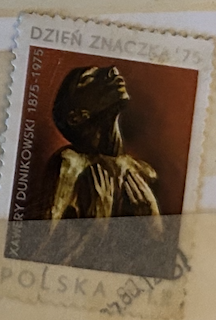
| SOURCE | TITLE| IMAGE MATCH | click to source page |
| Katalog Polskich Znaczków Pocztowych | Dzień Znaczka - 100 rocznica urodzin Xawerego Dunikowskiego - 2264 - Katalog Polskich Znaczków Pocztowych | |
| Amazon.com | Amazon.com: Tchotchke Stamp Art - Collectible Postage Stamp - Xawery Dunikowski Sculpture : Toys & Games | 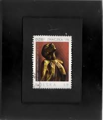 |
| Polska6.pl | Znaczki Polska6.pl - Sklep filatelistyczny | 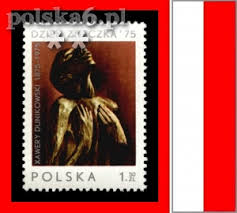 |
| Osta.ee | 64-19 Leiunurk varia (247427370) - Osta.ee | 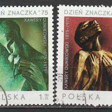 |
| Osta | 10-27 poola kunst (247078863) - Osta.ee | 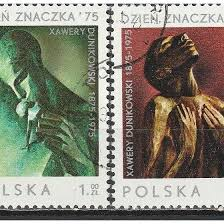 |
| Allegro | 2264 czwórka 2x2 cz** 1975 Dunikowski - 11966847933 - oficjalne archiwum Allegro | 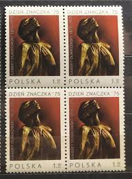 |
| Stamp Digest | Sculptures by Xawery Dunikowski- Stamps of Poland 1975. – Stamp Digest | 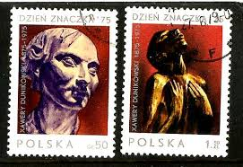 |
| carousell.ph | Poland 1968 - Polish Paintings 4v. (used), Hobbies & Toys, Memorabilia & Collectibles, Stamps & Prints on Carousell | 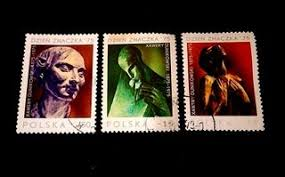 |
| Allegro Lokalnie | 1 1975 - Allegro Lokalnie | 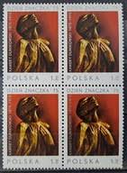 |
| eBay UK | Poland 1975 SG#2395-8 Xawery Dunikowski Cto Used Set #D81656 | eBay UK | 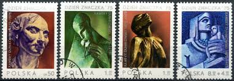 |
| eBay UK | Art, Artists Used Polish Stamps for sale | eBay UK | 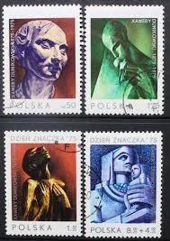 |
| eBay | Poland Stamps Scott #2126 To 2128, Mint Never Hinged | eBay | 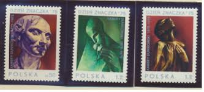 |
| Amazon.com | Amazon.com: Poland 2409-2412 (Complete.Issue.) unmounted Mint/Never hinged ** MNH 1975 100. Birthday of dunikowski (Stamps for Collectors) Sculptures : Toys & Games | 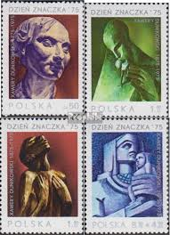 |
| volstamp.in.ua | Buy 1975 Poland Series of stamp (Stamp Day 1975 -Birth centenary of Xavier Dunikovsky) Used №2409-2412 | 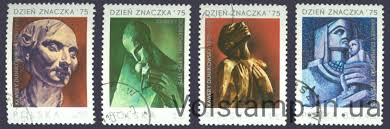 |
| eBay | Poland 2409-2412 (complete issue) used 1975 100. Birthday X. du | eBay | 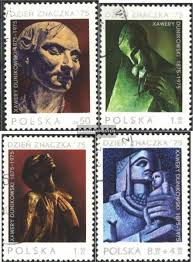 |
| Find Your Stamps Value | Folk Art (Sculptures): Angel 20g Light blue & multicolored stamp price, value | 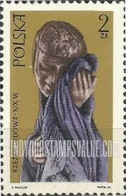 |
| stampsandstuff.net | Stamps from Poland 1970-1979 | 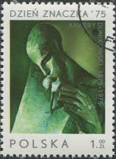 |
| eBay | S5338 Poland 1975 art sculptures 4v. MLH | eBay | 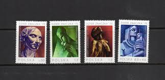 |
| Dreamstime.com | POLAND-CIRCA 1979 : a Post Stamp Printed in Poland Showing. the 13th National Philatelic Exhibition in Katowice, Commemorating the Editorial Image - Illustration of 1979, collection: 219869835 | 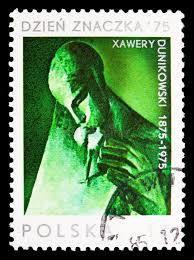 |
| eBay | POLAND Sc 2126-8,B131 NH ISSUE OF 1975 - ART | eBay | 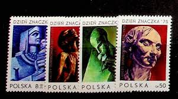 |
| eBay | Poland - 1969 The 19th Century Popular Sculptures | eBay | 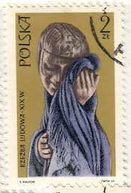 |
| HipStamp | Poland 2127 Breath 1.00zł 1975 | Europe - Poland, General Issue Stamp / HipStamp | 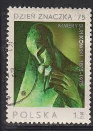 |
| All Numis | Stamps Catalog - List of stamps for Art-Sculpture, Poland - page 4 | 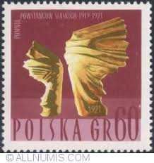 |
| Freestampcatalogue.com | Stamps - Freestampcatalogue.com - The free online stampcatalogue with over 500.000 stamps listed. | 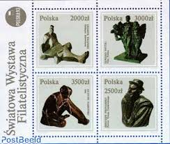 |
| eBay | Poland FDC 1992 World Philatelic Expo; Polish Sculptures Bziorow Museum SS! | eBay | 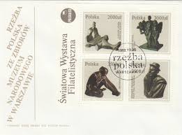 |
| CollectorBazar | Poland 1975 The day of the Stamp- The 100th Anniversary of the Birth of Xawery Dunikowski | 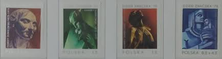 |
| The Philately | 1991 - 2000 Stamps for Sale - Page 2 of 3 - The Philately | 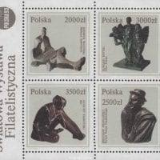 |
| eBay | POLAND Sc 3108-11+3111a NH SET+SOUVENIR SHEET OF 1992 - ART | eBay | 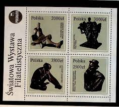 |
| eBay | ER01 Poland 2003 EUROPA Stamps - Poster Art - Vanitas MNH | eBay | 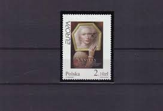 |
| eBay | Poland 1993 FDC - Polish Sculpture, Nat'l Museum in Warsaw - F12613 | eBay | 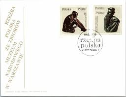 |
| eBay | Poland Stamp Scott #1517, Used, CTO With Gum, Hinge Remnant | eBay | 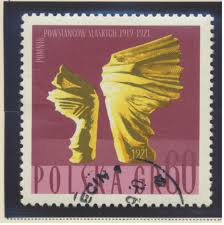 |
| eBay | Berlin Germany 1981 Θ Mi.655/57 Kunsthandwerk Handicraft Skulpturen Sculptures | eBay | 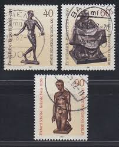 |
| HipStamp | Poland 1992 Sc 3111a Polish Art Sculptures National Museum Warsaw MS Stamp MNH | Europe - Poland, General Issue Stamp / HipStamp | 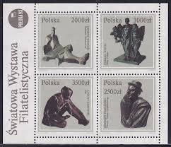 |
| eBay UK | Art, Artists Polish Stamps for sale | eBay UK | 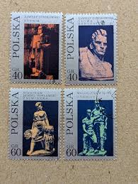 |
| eBay.de | Briefmarken Polen 2006 Mi 4234-4235 (kompl.Ausg.) gestempelt Zeitgenössische Sku | eBay.de | 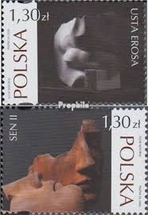 |
| eBay | Poland #3111a 1992 Polish Sculptures MS on cover to India | eBay | 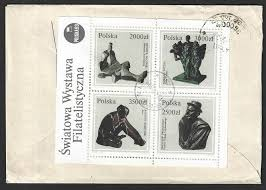 |
| iStock | Hungarian Postage Stamps Stock Photo - Download Image Now - Antique, Black Background, Black Color - iStock | 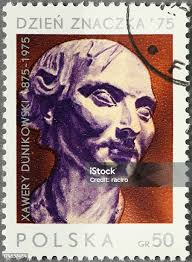 |
| Alamy | Old vintage polish postage stamp hi-res stock photography and images - Page 3 - Alamy | 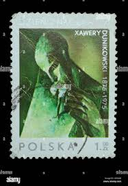 |
| eBay UK | Mint Never Hinged/MNH 4 Number Polish Stamps for sale | eBay UK | 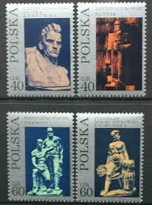 |
| eBay | SKV) 1967. Poland . Statue. Silesian Insistents. 1 stamp used. | eBay | 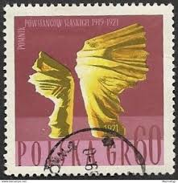 |
| Shutterstock | Ankaratürkiye Dec172022 Postage Stamp Breath Printed Stock Photo 2239005133 | Shutterstock | 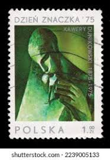 |
| Dreamstime.com | Dunikovsky Stock Photos - Free & Royalty-Free Stock Photos from Dreamstime | 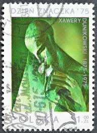 |
| allnumis.com | 2 Złote 1969 - Crying woman, 1969 - Poland - Stamp - 33807 | 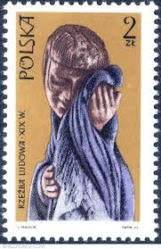 |
| Find Your Stamps Value | Value of takca stamps | 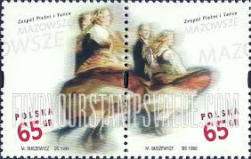 |
| eBay | POLSKA Fi 804-807 ** 1955 rok Mickiewiczowski | eBay | 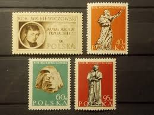 |
| eBay | Fujeira 1972 Mi.846/50 A fine used c.t.o. Skulpturen Sculptures Rodin Pieta | eBay | 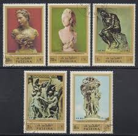 |
| eBay | Poland, Polska Postage Stamps | eBay | 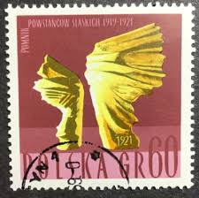 |
| allnumis.com | 60 groszy - Child & flames., National and International event - Poland - Stamp - 20886 | 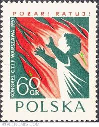 |
| eBay | 2026 FISCHER Catalogue of Polish Postage Stamps and related to Poland VOL 1 | eBay | 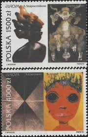 |
| Shutterstock | Popular Stamp: Over 3,446 Royalty-Free Licensable Stock Photos | Shutterstock | 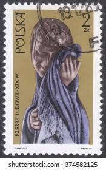 |
| Free stamp catalogue | Stamps from Poland - Freestampcatalogue.com - The free online stampcatalogue with over 500.000 stamps listed. | |
| eBay | Polen 1977 ** Mi.2508 Paintings Gemälde von Jacob Toorenvliet [sq2606] | eBay | |
| Free stamp catalogue | Stamps from Poland - Freestampcatalogue.com - The free online stampcatalogue with over 500.000 stamps listed. | |
| YouTube | Postage stamp. POCZTA POLSKA. POMNIK POWSTANCOW SLASKICH 1919-1921. Price 60 gr. - YouTube | |
| lastdodo.com | Sculptures 50 (1975) - Poland - LastDodo | |
| Todocolección | malta 1983 europa cept. matasellado (2ta29) - Buy Stamps about Europa CEPT on todocoleccion | |
| ProBoards | Poland: Stamps | The Stamp Forum (TSF) | |
| Shutterstock | Singapore April 10 2016 Stamp Printed Stock Photo 403400530 | Shutterstock | |
| eBay | POLAND POLSKA OLD STAMPS 1955 Adam Mickiewicz - USED | eBay |